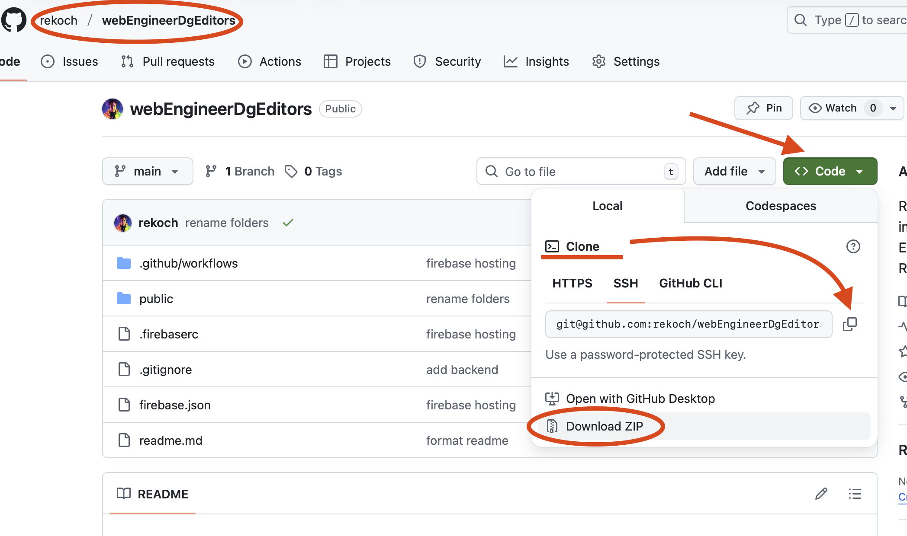
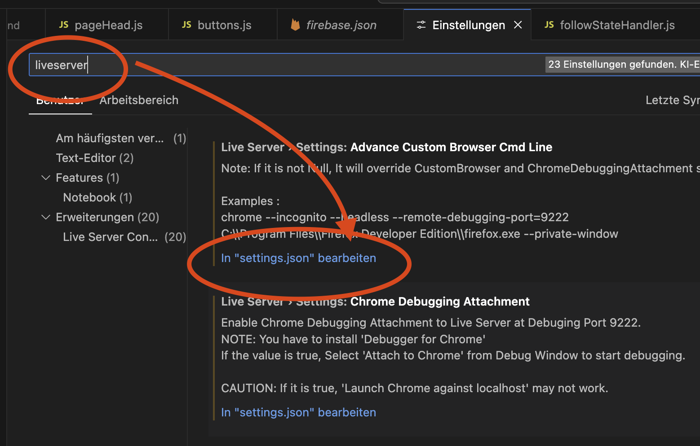

⛓️‍💥 Backend verbinden
🯠Frontend trifft Backend
📊 Situation verstehen
Frontend-Only: Alles ist einfach - nur ein Datenzustand im Browser:
- Button gedrückt? ✅ HTML/Cookie
- Seite geliked? ✅ Lokaler Speicher
Mit Backend: Zwei Datenzustände synchronisieren:
- 🖥️ Frontend-State (Browser)
- 🗄️ Backend-State (Datenbank)
🯠Erste Implementierung-Ziele
- 📊 Like Count vom Backend laden und korrekt anzeigen
- 🔄 Blog-Page-ID-Wechsel mit Backend-Daten synchronisieren
📠Code-Setup
🔗 Projekt-Code holen
Frontend herunterladen:
https://github.com/rekoch/webEngineerDgEditors/tree/main/public/03_javascript/04_01_backendBaseConnection
Backend herunterladen:
https://github.com/rekoch/webEngineerDgEditors/tree/main/public/00_backend
Alternative: Komplettes GitHub Projekt klonen oder als ZIP herunterladen. 
⚙️ VS Code Settings anpassen
LiveServer-Konfiguration erweitern:
- Settings öffnen: Button unten links → Settings

- LiveServer suchen: "liveServer" eingeben → "In settings.json öffnen"
 3. JSON erweitern:
"liveServer.settings.ignoreFiles": [
".vscode/**",
"public/00_backend/**"
]
Achte darauf, dass bei der Zeile davor ein Komma am Schluss ist.

- Speichern und schließen
🔧 Optional: SQLite-Editor
SQLite3 Editor Extension installieren für direkten Datenbank-Zugriff.
📂 Projekt-Struktur verstehen
🗄️ Backend-Struktur (00_backend/)
00_backend/
├── 📄 app.js # Express-Hauptanwendung
├── 📄 package.json # Dependencies & Scripts
├── 📄 .env # Umgebungsvariablen
├── 📄 editorialContent.db # SQLite-Datenbank
├── 📄 readme.md # Setup-Anweisungen
├── 📠routes/ # API-Endpunkte
│ ├── likes.js # Like-Funktionalität
│ ├── authorFollow.js # Autor-Follow
│ └── topicFollow.js # Topic-Follow
├── 📠db/ # Datenbank-Layer
│ ├── blogPageLikesRepo.js # Like-Operationen
│ ├── authorFollowRepo.js # Autor-Follow-Ops
│ └── topicFollowRepo.js # Topic-Follow-Ops
└── 📠utils/ # Middleware & Tools
├── corsMiddleware.js # CORS-Konfiguration
└── swagger.js # API-Dokumentation
🚀 Backend starten
# Terminal öffnen
cd public/00_backend
# Dependencies installieren
npm install
# Development-Server starten
npm run dev
# ✅ Backend läuft auf Port 3000
# 📚 API-Docs: http://localhost:3000/api-docs/
🨠Frontend-Struktur (04_01_backendBaseConnection/)
04_01_backendBaseConnection/
├── 📄 index.html # Haupt-HTML
├── 📠css/ # Styling
├── 📁 javascript/
│ ├── 📄 main.js # Entry Point
│ ├── 📠services/ # Backend-Services
│ │ ├── 📄 observer.js # Event-System (Singleton)
│ │ ├── 📄 httpClient.js # HTTP-Wrapper
│ │ ├── 📄 blogPageLikes.js # Like-API-Calls
│ │ ├── 📄 authorFollow.js # Autor-Follow-APIs
│ │ └── 📄 topicFollow.js # Topic-Follow-APIs
│ └── 📠pages/blogPage/ # Blog-spezifische Logik
│ ├── 📄 blogPageMain.js # Koordination
│ ├── 📄 buttons.js # Button-Events
│ ├── 📄 likeStateHandler.js # Like-State
│ ├── 📄 followStateHandler.js # Follow-State
│ └── 📄 tables.js # Tabellen-Management
🏗️ Architektur-Highlights
Services Layer
- Backend-Integration: Alle API-Calls (erfordert laufenden Backend-Server)
- Observer Pattern: Event-System für applikationsweite Zustandssynchronisation
- Vorteil: Keine Page-Reloads bei Datenänderungen
Event-Driven Architecture
- Observer.js: Singleton-Pattern für typsafe Events
- Auto UI-Updates: Änderungen reflektiert überall
- Performance: Minimale API-Calls durch intelligente Zustandsverwaltung
Moderne JavaScript-Patterns
- ES6-Module: Import/Export-System
- Async/Await: Statt Promise-Chains
- Event Prevention: Verhindert Page-Reloads
🔄 Frontend ↔ Backend Workflow
- Frontend → API-Calls über Services
- Backend → JSON-Response
- Observer → Änderungen an UI-Komponenten verteilen
- UI → Automatische Updates ohne Page-Reload
📊 Like Count Implementation
🯠Schritt 1: setLikeCounter-Funktion erstellen
In likeStateHandler.js - am Ende der Datei:
function setLikeCounter() {
// Logik kommt hier rein
}
🔒 Schritt 2: BlogPageId-Validierung
function setLikeCounter() {
if (blogPageId) {
// Nur weiter wenn gültige BlogPageId vorhanden
}
}
🨠Schritt 3: HTML-Element finden und Test-Wert setzen
function setLikeCounter() {
if (blogPageId) {
document.getElementById("data-like-counter").textContent = 99;
}
}
🔗 Schritt 4: Funktion integrieren
blogPageMain.js erweitern:
// Importiere die notwendigen Module
import "./buttons.js";
import "./tables.js";
import "./likeStateHandler.js";
likeStateHandler.js - am Ende:
observeUserIdChange();
observeBlogPageIdChange();
observeLikeEvents();
setLikeCounter();
⚡ Schritt 5: BlogPageId setzen & Sichtbarkeit
Test-BlogPageId setzen:
let blogPageId = 37832; // Statt 0
Invisible-Klasse entfernen:
function setLikeCounter() {
if (blogPageId) {
document.getElementById("data-like-counter").textContent = 99;
document.getElementById("like-counter").classList.remove("invisible");
}
}
✅ Test: Du solltest jetzt "99" und den Text sehen!
🌠Backend-Integration
📡 Schritt 1: Service importieren
import { appObserver, ObserverEvents } from "../../services/observer.js";
import { getLikesPerBlogPage } from "../../services/blogPageLikes.js";
🔄 Schritt 2: Backend-Call implementieren
function setLikeCounter() {
if (blogPageId) {
try {
const response = getLikesPerBlogPage(blogPageId);
document.getElementById("data-like-counter").textContent = response.likeCount;
document.getElementById("like-counter").classList.remove("invisible");
} catch (error) {
console.error("Error loading likes:", error);
}
}
}
🚨 Problem: Keine Zahl wird angezeigt? Async-Problem!
⚡ Schritt 3: Async/Await Pattern
Problem: Code wartet nicht auf Backend-Response.
Lösung: await für asynchrone Operationen.
async function setLikeCounter() {
if (blogPageId) {
try {
const response = await getLikesPerBlogPage(blogPageId);
document.getElementById("data-like-counter").textContent = response.likeCount;
document.getElementById("like-counter").classList.remove("invisible");
} catch (error) {
console.error("Error loading likes:", error);
}
}
}
✅ Test: Echte Backend-Daten werden geladen!
🔄 Event-Driven Counter Updates
🯠BlogPageId-Change-Event nutzen
Direkten Funktionsaufruf entfernen:
// observeUserIdChange();
// observeBlogPageIdChange();
// observeLikeEvents();
// setLikeCounter(); ← Diese Zeile entfernen
📡 Observer-Integration
In observeBlogPageIdChange():
function observeBlogPageIdChange() {
appObserver.subscribe(
ObserverEvents.BLOG_PAGE_ID_CHANGED,
async (data) => {
blogPageId = data.blogPageId;
console.log("Current Blog Page ID in likeStateHandler:", blogPageId);
setLikeCounter(); // ← Hier aufrufen
},
true // Replay-Funktion für Initial-State
);
}
🔄 Event-Flow verstehen
main.js→ BlogPageId = 2 setzenmain.js→appObserver.emit()Event versenden- Observer → Alle Subscriber informieren
likeStateHandler→subscribe()mittrue= Replay-Funktion- Replay → Auch nachträglich registrierte Subscriber erhalten letzten Wert
🔄 BlogPageId zurücksetzen
let blogPageId = 0; // Wieder auf 0, da Wert von Observer kommt
✅ Test: Likes werden weiterhin geladen, aber jetzt event-driven!
Du kannst dies auch im Console.log überprüfen.

🧪 Testing & Experimentation
🔧 BlogPageId dynamisch ändern
In main.js experimentieren:
// Verschiedene Blog-Page-IDs testen
appObserver.emit(ObserverEvents.BLOG_PAGE_ID_CHANGED, { blogPageId: 12345 });
📊 Development Workflow
- Backend starten:
cd 00_backend && npm run dev - Frontend öffnen:
index.htmlüber LiveServer - API testen: http://localhost:3000/api-docs/
- Console-Logs beobachten für Event-Flow-Debugging
🉠Meilenstein erreicht!
✅ Was funktioniert jetzt:
- 📊 Backend-Integration - Like-Count aus Datenbank
- 🔄 Event-Driven Updates - Observer-Pattern implementiert
- ⚡ Async/Await - Moderne JavaScript-Patterns
- 🎛️ Dynamic BlogPageId - Reaktion auf ID-Änderungen
🚀 Nächste Schritte:
Im nächsten Kapitel machen wir die Like-Buttons funktional und synchronisieren Backend-State mit Frontend-Interaktionen!